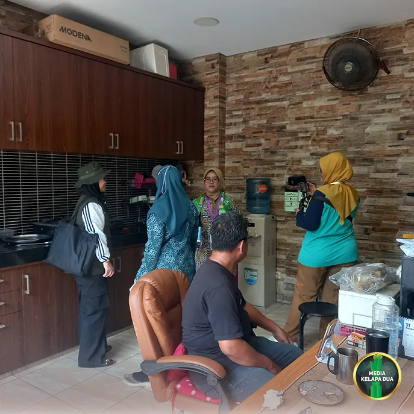

Berita Utama

Verifikasi Lapangan Lomba Kampung Bebas Jentik di RW 08 Kelapa Dua
Tanggal, 3 November 2026
MediaKada | Dalam rangka mewujudkan lingkungan yang bersih, sehat, dan bebas dari jentik nyamuk, Tim Verifikasi Lapangan Lomba Kampung Bebas Jentik Tingkat Provinsi DKI Jakarta melakukan penilaian di RW 08 Kelurahan Kelapa Dua, Kecamatan Kebon Jeruk, Kota Administrasi Jakarta Barat, Selasa (3/11).
Lomba Kampung Bebas Jentik dilaksanakan secara berjenjang, mulai dari tingkat kelurahan, kecamatan, kota administrasi hingga provinsi. Setelah berhasil meraih Juara 1 tingkat Kota Administrasi Jakarta Barat, RW 08 Kelurahan Kelapa Dua dipercaya mewakili Jakarta Barat pada ajang tingkat Provinsi DKI Jakarta..
Terpilihnya RW 08 Kelurahan Kelapa Dua tidak lepas dari berbagai capaian yang berhasil diraih. Sepanjang tahun 2026, wilayah tersebut tercatat nihil kasus Demam Berdarah Dengue (DBD). Selain itu, kegiatan Pemberantasan Sarang Nyamuk (PSN) secara rutin dilaksanakan setiap hari Jumat oleh para kader Jumantik RW 08 serta didukung inovasi digital melalui aplikasi Self Jumantik.
Self Jumantik merupakan inovasi unggulan yang ditampilkan RW 08 dalam Lomba Kampung Bebas Jentik. Melalui aplikasi ini, warga dapat melaksanakan kegiatan PSN secara mandiri setiap hari Selasa dengan melakukan pemindaian (scan) barcode yang terdapat pada stiker di setiap rumah warga. Hasil kegiatan kemudian tercatat dalam sistem sebagai bentuk partisipasi aktif masyarakat dalam upaya pencegahan DBD.
Keberadaan aplikasi Self Jumantik diharapkan mampu menumbuhkan kesadaran masyarakat untuk menjadikan pemberantasan sarang nyamuk sebagai budaya dan kebiasaan sehari-hari. Dengan demikian, lingkungan yang bersih, sehat, serta bebas dari jentik nyamuk dapat terus terwujud dan dipertahankan di wilayah RW 08 Kelurahan Kelapa Dua.
Ketua Tim Verifikasi Lapangan Lomba Kampung Bebas Jentik, Aan Ariyani, S.K.M., M.Kes., menjelaskan bahwa kegiatan verifikasi dilakukan untuk mencocokkan data dan paparan yang telah disampaikan dengan kondisi nyata di lapangan.
Selain melaksanakan verifikasi lapangan, RW 08 Kelurahan Kelapa Dua juga dijadwalkan memaparkan berbagai program dan capaian Kampung Bebas Jentik di hadapan tim penilai dari Dinas Kesehatan Provinsi DKI Jakarta pada 11 November 2026 mendatang.
Sementara itu, Plt. Camat Kebon Jeruk, Pangestu Aji Swahdhanu, S.STP., M.A.P., menyampaikan apresiasi atas berbagai pencapaian yang telah diraih RW 08 Kelurahan Kelapa Dua. Menurutnya, keterpilihan RW 08 sebagai peserta lomba tingkat provinsi merupakan hasil dari kolaborasi yang baik antara pengurus wilayah, kader Jumantik, serta masyarakat yang secara aktif terlibat dalam upaya pemberantasan sarang nyamuk.
Kegiatan verifikasi lapangan tersebut dihadiri oleh Ketua Tim Verifikasi Lapangan Aan Ariyani, S.K.M., M.Kes. beserta jajaran tim dari Dinas Kesehatan Provinsi DKI Jakarta, Plt. Camat Kebon Jeruk Pangestu Aji Swahdhanu, S.STP., M.A.P., Lurah Kelapa Dua Elfin Ridho Putra beserta staf, Kasi Kesra Kecamatan Kebon Jeruk, perwakilan Suku Dinas Kesehatan Kota Administrasi Jakarta Barat, Puskesmas Kecamatan Kebon Jeruk, Puskesmas Pembantu Kelurahan Kelapa Dua, Tim Penggerak PKK Kelurahan Kelapa Dua, Bhabinkamtibmas Kelurahan Kelapa Dua, Satpol PP Kelurahan Kelapa Dua, LMK Kelurahan Kelapa Dua, FKDM, Ketua RW dan Ketua RT setempat, kader Jumantik, kader Dasawisma, serta PPSU Kelurahan Kelapa Dua.
Melalui verifikasi lapangan ini, RW 08 Kelurahan Kelapa Dua berharap dapat memberikan hasil terbaik sekaligus menunjukkan komitmen masyarakat dalam menciptakan lingkungan yang sehat, bebas jentik, dan berkelanjutan sebagai bagian dari upaya pencegahan penyakit berbasis lingkungan.